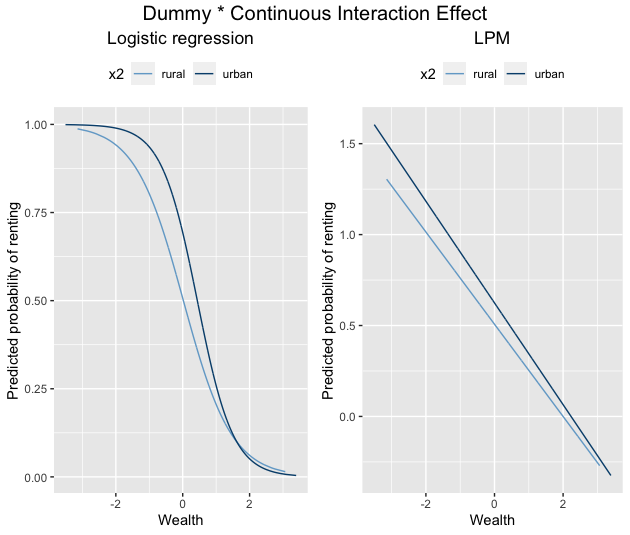
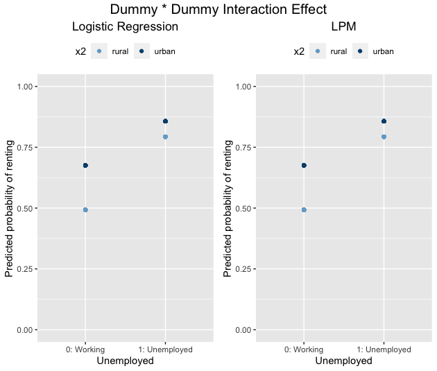
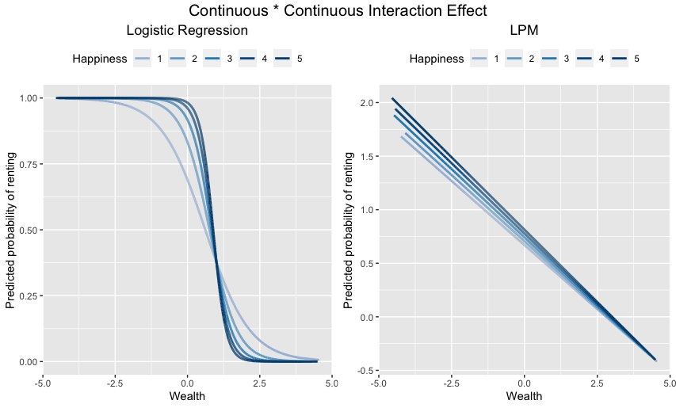

Introduction
Many social science studies are interested in investigating interaction effects, or: how the relationship between a predictor (x_{1}) and an outcome (y) depends on a second predictor (x_2). x_2 is, in this context, sometimes also called a “moderator”, as it moderates or influences the relationship between x_1 and x_2.
Such interaction effects are pretty straightforward in linear regression models, but they tend to be more complicated in a logistic regression model (i.e., when the dependent variable of interest is binary, a.k.a., “zero or one”). There are multiple complications in logistic regression: the sign of the logistic regression coefficient is sometimes misleading (i.e., the coefficient might be negative, but the interaction might be positive for some values of the predictors in the model), and the interaction term in general depends on the values of the variables in the interaction.
One solution to making sense of interactions in logistic regression is to use visualizations, a.k.a., plotting the interactions. In this post, I discuss some examples of logistic regression interactions. I consider interactions between:
- a dummy variable (0 or 1) and a continuous predictor,
- a dummy variable and another dummy variable, and
- a continuous predictor and another continuous predictor.
Additionally, as many people might be tempted to just use linear regression instead for ease of interpretation (i.e., fitting a so-called “linear probability model”), I will illustrate why doing so is usually not a good idea.
Note: This post is not code-heavy as my other posts, you can check out the code reproducing all plots on my GitHub.
Simulating the interactions
I simulated data in R using the canonical approach to simulating logistic regression data. For each scenario, I simulate two predictors (x_1 and x_2), which are related to the outcome via the logit link:
P(Y=1|X) = \frac{1}{1 + e^{-(intercept + b_{1}x_{1}+b_{2}x_{2}+b_{3}x_{1}x_{2})}}
In scenario 1, x_{1} is a dummy variable and x_{2} is continuous. In scenario 2, both x_{1} and x_{2} are dummy variables. In scenario 3, both x_{1} and x_{2} are continuous variables. I simulate 3000 data points in each scenario. I, then, for each scenario, ran a logistic regression and an LPM, and plotted the interaction effects on the probability scale. You can find the R code here.
Dummy - Continuous Interaction
Let’s consider an example. We want to estimate how the probability of renting an apartment (as opposed to being a homeowner; y) depends on wealth (x_1) and how the effect of wealth (x_1) on renting (y) differs between rural and urban areas (x_2, where 0=rural, 1=urban).
We simulate some data and run two models: a logistic regression model and a linear probability model. Then, we plot the relationship between the predicted probability of renting and two lines for wealth: effect of wealth in rural areas and effect of wealth in urban areas. The two plots are shown below:

Logistic Regression
The first thing we notice about the logistic regression plot is that both lines are nonlinear and S-shaped. This is due to the “logit link” or “logistic transformation” that happens when you fit a logistic regression model. That transformation constrains the predicted probabilities to the [0,1] interval.
We see that both in rural and urban regions, more wealth means a lower probability of renting (so, a higher probability of being a homeowner). The relationship between wealth and renting, furthermore, differs a bit between rural and urban regions. In urban regions, the probability of renting is generally higher, but an increase in wealth lowers the probability of renting more substantially than in rural areas. When wealth is about 1.5, the relationship reverses: at high levels of wealth, the probability of renting is higher in rural areas.
The S-shaped curve also makes substantive sense: if you are a millionaire already, a, say, €10k increase in wealth is probability not going to reduce your probability of renting as much as when you only have €100k.
Linear Probability Model (LPM)
The right part of the figure shows the interaction between wealth and renting in an LPM. As the LPM is just linear regression, it imposes a linear relationship between the independent variables and the dependent variable. Therefore, we see no S-shaped curve here, but two straight lines.
Let us first look at the range of the y-axis. The y-axis, which shows the predicted probabilities of renting, ranges from 1.5 to -0.25. Obviously, this doesn’t make any sense: the probability of renting cannot be 150% or -25%. This is the principal, incorrigible, flaw of the LPM. In almost any LPM that contains continuous variables, you will get nonsensical predicted probabilities.
But does the LPM interpretation of the interaction at least match that one of the logistic regression model? Not quite. On the whole, LPM does get it sort of right: the relationship between wealth and renting is negative; urban areas have a higher probability of renting than rural areas, but the difference between urban and rural regions shrinks as wealth increases. However, the lines do not cross: LPM apparently does not pick up that the relationship reverses at large values of wealth.
I played around a bit with the setup of the simulation, and when I increased the simulated coefficient for the interaction (from -0.5 to -0.8), LPM did eventually show that the relationship reversed, but at a completely different level of wealth than in the logistic regression model (2.2 instead of 1.25).
Dummy - Dummy Interaction
When we interact two dummy variables, we want to see how the predicted probabilities of a discrete variable depend on the values of another discrete variable. For example, does the relationship between being unemployed (0=working, 1=unemployed) depend on whether someone lives in a rural or urban region?
We, again, run a logistic regression and a linear probability model to investigate this. The plot is given below:

The interpretation here is straight forward and does not differ between logistic regression and the LPM. Unemployed people have a very high probability of being renters, and the probability of renting is higher in urban than in rural regions. People who are not unemployed have a lower probability of renting, especially those in rural regions.
Interestingly enough, the results from the LPM are exactly the same as those from logistic regression, and there do not seem to be any nonsensical predicted probabilities!
Continuous - Continuous Interaction
Lastly, let’s see what happens when we interact two continuous variables. Suppose we want to test how the relationship between wealth and renting depends on how happy people are (x_2).
We, again, run a logistic regression and an LPM:

Logistic Regression
The left part of the plot shows that, in logistic regression, the relationship between wealth and renting is, in general, negative: the wealthier someone is, the less likely that someone will be a renter. This relationship depends, however, on how happy someone is. Up until a value of about “1” on wealth, happier people have a higher probability of renting than people who are less happy. At a value of “1” on wealth, the relationship reverses: now, happy people have a lower probability of renting than sad people.
Linear Probability Model
The LPM gets the overall pattern somewhat OK: the gap between the probabilities of happy and less happy people being renters decreases as wealth increases. Unlike logistic regression, the LPM fails to show that the relationship reverses at a value of about “1” on wealth. Instead, the LPM shows the lines to converge around 4.8 on “wealth”. Furthermore, the range of predicted probabilities makes no sense: the y-axis ranges from a bit more than 2(!) to about -0.4. This corresponds to a 200% or -40% probability of renting. Yikes!
Conclusions
What can we learn from all of this?
Interaction effects involving continuous variables are always non-linear in logistic regression (the same goes for main effects). This is due to the model itself: logistic regression is based on a logit transformation of the linear predictor, which keeps the range of the predicted probabilities confined to between zero and one. This means that the coefficient of the interaction might, for example, be negative, but the interaction is likely to be positive for some value of x_{1} or x_{2}. You pretty much only see this if you plot the interaction.
Interactions in the linear probability model appears to be a good approximation of interactions in logistic regression as long as the variables involved are dummy variables. As soon as a continuous variable is involved in the interaction, LPM interactions can deviate more or less substantially from their logistic counterpart. LPM starts to produce nonsensical predicted probabilities, and the “meaning” of the interaction changes. For example, logistic regression might suggest that the interaction reverses at a certain point, whereas LPM might just show you that differences converge, but do not reverse.
Bonus: If you play around with the simulation, you will see that a tiny change in one of the simulated coefficients might produce astonishingly big changes in the LPM interactions. In that sense, the LPM seems pretty inconsistent.
What are the implications of 1.), 2.), and 3.)?
Be careful when interpreting interaction effects in logistic regression models. The coefficients often do not tell you the whole story.
The LPM is defensible when the model contains only dummy variables, but seems inappropriate when the model/the interaction involves continuous variables. You are very likely to get nonsensical predicted probabilities.
Use logistic regression instead of the LPM. It is closer to the truth and can be more realistically interpreted.
Reuse
Citation
@online{fang2022,
author = {Fang, Christian},
title = {Visualizing {Interaction} {Effects} in {Logistic}
{Regression} and {Linear} {Probability} {Model}},
date = {2022-10-31},
url = {https://christianfang.eu/posts/interactions/},
langid = {en}
}